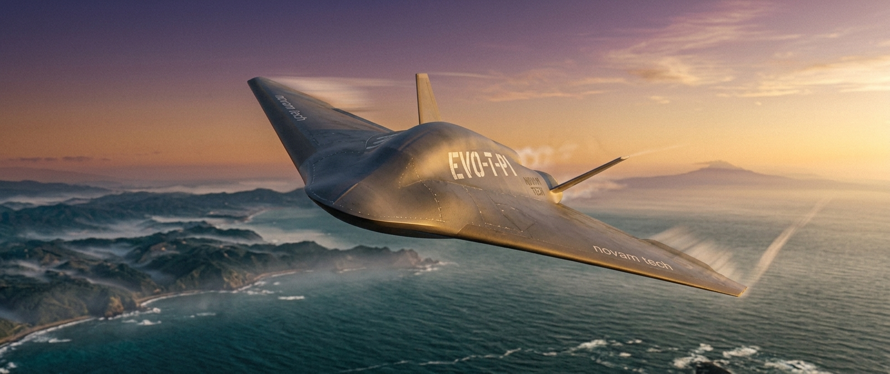

A Blended Wing Body hybrid-jet VTOL targeting 600 km/h cruise with zero runway dependency and GPS-denied autonomous navigation — engineered in Japan, for defense and spaceport logistics markets where no solution currently exists.
★ = CFD-confirmed | ◎ = Design target | ○ = Research roadmap

No aircraft today can take off vertically from an unprepared surface, cruise at jet speeds, and navigate autonomously without GPS. This gap has existed since the Wright Brothers and remains unfilled.
| Capability | Helicopter | eVTOL (Joby / Archer) | Jet Aircraft | EVO-T |
|---|---|---|---|---|
| Top speed | ⚠ 250 km/h Rotor physics wall |
⚠ 250 km/h Battery limit |
✓ 800+ km/h Runway only |
600 km/h ◎ |
| Runway-free VTOL | ✓ Yes | ✓ Yes | ✗ No | ✓ Yes ◎ |
| GPS-denied autonomous ops | ✗ Pilot-dependent | ✗ GPS-required | ✗ GPS-required | ±2 cm target ◎ |
| Japanese sovereign IP | ✗ Mostly foreign | ✗ None exist | ✗ None | 3 patents in preparation ◎ |
| EVO-T gap | 600 km/h cruise · Zero runway · GPS-denied navigation · Sovereign Japanese IP · Renewable propulsion roadmap | |||
Each technology is co-designed with the others. The NDI control law is tuned to this specific airframe. The navigation system feeds into the same EKF that underpins NDI. Neither works at full capability without the other.
Non-linear Dynamic Inversion managing EDF-to-jet transition in a statically unstable BWB airframe. The CFD-confirmed instability (Cm_α = +0.415/rad) is the engineering challenge nobody else is solving.
Three-layer sensor fusion via Extended Kalman Filter. Natural surface feature signatures + semantic landmark detection + laser depth array. Zero pre-installed infrastructure required.
Phase 1: AMT Nike microturbojet + 6×EDF hybrid. Phase 3 (research): Al-B solid composite fuel rod — patent application in preparation. Staged de-risking separates research risk from execution risk.
EVO-T v1 uses proven jet propulsion today. The solid metal composite fuel system is a separately-tracked research program — patent application in preparation, to be integrated in v3. Research risk and execution risk do not share the same timeline.
Proven off-the-shelf components. AMT Nike is a certified microturbojet with known performance characteristics. Six EDF units provide vertical lift and transition assist. NDI software manages the handover between both thrust sources.
Details available upon request under NDA.
○ Confidential — available upon request
The three technologies are co-designed. No single component functions at full capability without the other two. The integration is the invention.
Without the NDI control law specifically tuned to Cm_α = +0.415/rad on this airframe geometry, the aircraft is aerodynamically uncontrollable.
Tuned to specific aerodynamic coefficients validated by OpenFOAM CFD on EVO-T's geometry. Zero transferability to a different airframe without repeating the full design loop.
Without integration as a position measurement update in the NDI Extended Kalman Filter, it remains an instrument display — not a flight control input.
Patent application NTK-2026-PROP-005 (in preparation) covers the specific tribological feed mechanism, dual-axis throttle equation, voice coil actuation, and NDI integration claims.
Requires the same iterative loop of CFD aerodynamic modelling → NDI control design → sensor fusion architecture → physical HIL testing that Tokyo Dynamics has been executing since 2021. The aerodynamic model, control law, and sensor fusion architecture cannot be purchased or downloaded.
Defense and spaceport customers have funded procurement requirements that no existing aircraft can meet. This is not a market to create — it is a market waiting for a product.
6,800-island defense perimeter. No sovereign high-speed autonomous VTOL platform for GPS-denied contested environments. ATLA submission already under ministry review.
Inter-facility logistics between Tanegashima, Hokkaido, and support sites. High-speed autonomous transport for critical components where current helicopters are too slow.
Every technical barrier between today and affordable personal air mobility — autonomous control, GPS-denied nav, energy density, runway-free landing — is what EVO-T proves first for defense.
Research risk (Al-B propulsion) and execution risk (EVO-T platform) are separated and progress on independent timelines.
BWB concept design. OpenFOAM CFD complete (all configurations). NDI SIL development underway. ATLA formal submission. Patent applications in preparation. Company established.
★ In Progress / CompleteNDI HIL verification on Matek flight controller. GPS-denied autonomous landing demonstration. Physical proof of core NDI + navigation claims. TRL 3 → 5. ATLA technical proposal engagement.
◎ DTSU Application ReadyAlpha-1 free flight with AMT Nike + EDF hybrid. ATLA formal procurement engagement. Spaceport LOI. Koray full-time. Team expansion to 10–15.
◎ Target: ¥300–500M — within 1 year of PoCFull-scale vehicle with hydrogen-compatible propulsion upgrade. JCAB/MoD certification track. Defense procurement contracts. Commercial spaceport operations begin.
○ Series B / IPOFriable rod propulsion replaces turbojet if theoretical energy density advantage is experimentally validated. Pathway to personal air mobility opens if economics hold.
○ Research Track — Not current programWe distinguish between what is proven, what is in progress, and what is a design target. Every claim here is backed by data or formal submission.
OpenFOAM v2406. Full four-configuration analysis. Cd=0.065, Cl=0.150, CL_α=1.934/rad, Cm_α=+0.415/rad. Static instability confirmed — NDI requirement validated.
★ Data AvailableFormal submission to Japan Defense Acquisition, Technology and Logistics Agency. Under ministry review as of 2026.
★ SubmittedFriable rod solid metal composite propulsion. Tribological feed mechanism, dual-axis throttle, multi-mode operation. JPO application in progress July 2026.
◎ In PreparationArduPilot SITL + JSBSim simulation. Python NDI control law implemented. 3-mode operation (hover/fault/transition) running in simulation. Hardware integration next.
◎ SIL Complete, HIL Next6× EDF components ordered. Matek flight controller selected. 3D design in progress. Physical demonstrations of NDI, GPS-denied landing, and fault recovery targeted August 2026.
◎ Building NowFour revenue streams across defense, logistics, and infrastructure — each at different margins and timescales. Defense unit sales anchor the model; SaaS and MaaS compound over time.
注：売上計画は予測値です。実際の結果は異なる場合があります。/ Revenue projections are estimates. Actual results may differ materially.
We are approaching leading deep tech VCs for NEDO DTSU co-submission partnership and bridge seed capital. Both asks serve the same goal: getting EVO-T from SIL to physical demonstration.
DTSU requires a VC/CVC investment intention letter covering ≥1/3 of eligible costs. Subsidy up to ¥500M at 2/3 subsidy rate over 24 months. PoC prototype → TRL 5 is the deliverable.
DTSU subsidy is paid in arrears. A 6–9 month cash flow gap exists between adoption and first payment. Bridge capital enables prototype execution, patent filings, and operations that make the DTSU application defensible.
The technical depth to build EVO-T sits across both founders. Neither can be separated from the platform they are designing.
MSc Materials & Energy Science, Science Tokyo (former Tokyo Tech). Global R&D Strategy Lead, Teraoka Seiko (current, provides financial stability during build phase). 10+ years mechatronics, robotics, and AI implementation in industrial manufacturing. Leads EVO-T aerodynamic design, CFRP/Ti composite structures, CFD workflow, and IP strategy.
MSc Computer Science (Computer Vision & HCI). PhD candidate, AI Systems, Osaka University. 5 years AI robotics at Connected Robotics. FPGA, DSP, GPU embedded systems specialist. Leads all real-time flight software: NDI control law implementation, ArduPilot SIL/HIL architecture, GPS-denied navigation (Extended Kalman Filter design, optical flow, visual signature system), and Matek flight controller integration.
摩擦脆性供給式多段モード金属複合燃料推進システム — Tribological abrasion feed, dual-axis throttle (ṁ = F × ω × κ × ρ), voice coil <20ms, turbojet/ramjet/scramjet single-fuel, Al fuel cycle
GPS非依存型VTOL自律航法システム — Natural feature angular signature encoding, altitude-normalized multi-scale extraction, 3-layer EKF fusion, 3D trajectory reconstruction
BWB-VTOL NDI遷移制御システム — 400Hz heterogeneous multi-source thrust coordination for statically unstable BWB airframe, EDF-to-jet autonomous transition